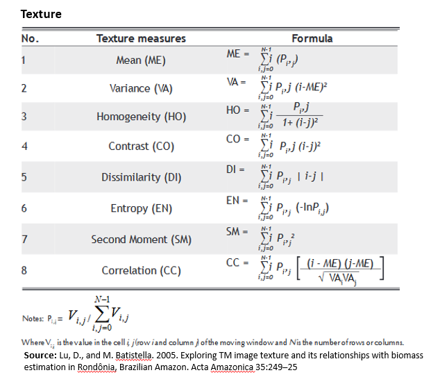
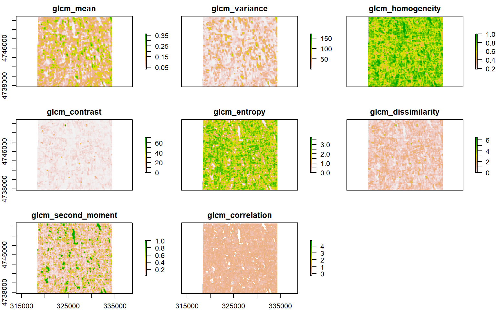
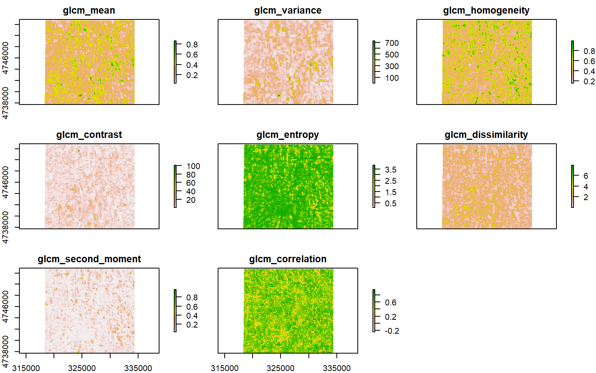
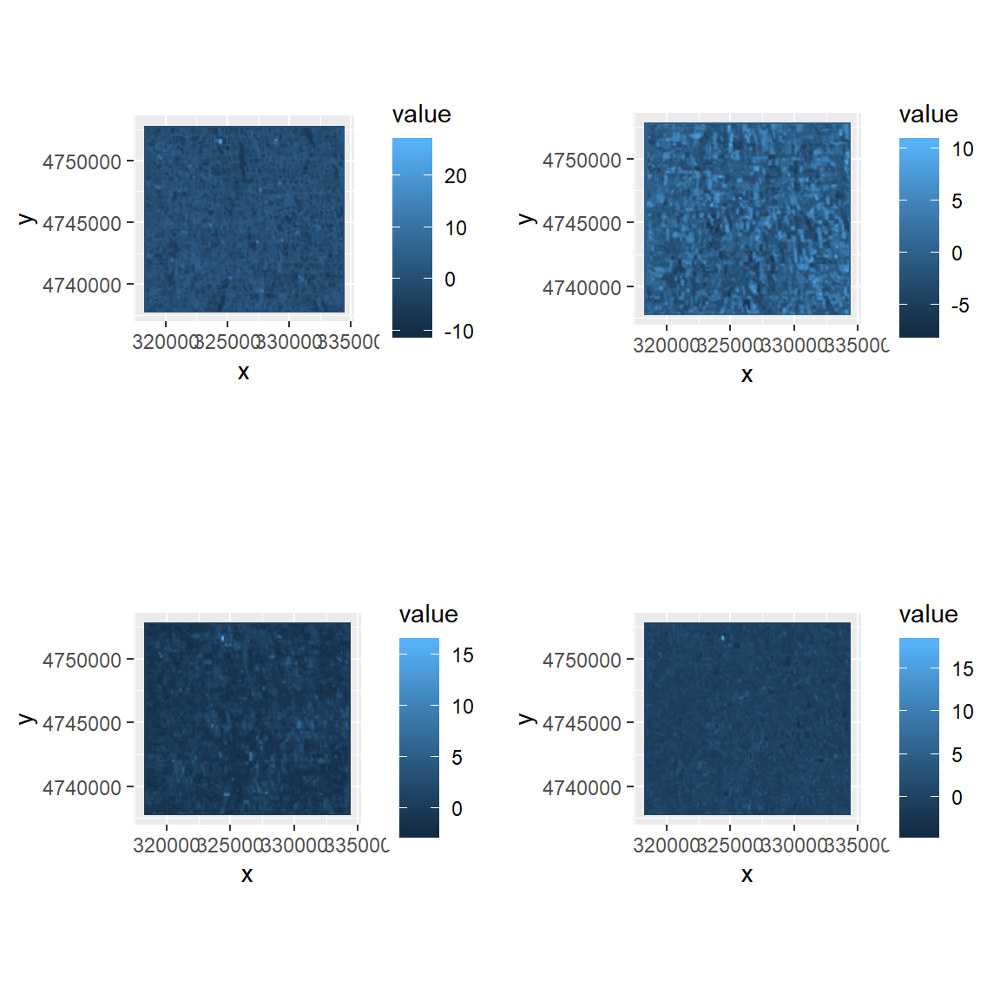

Texture Analysis
Texture is one of the most important characteristics dealt with during image interpretation and classification. Texture analysis has been successfully applied to forestry and vegetation studies using a variety of remote sensing data (Asner et al., 2002; Franklin et al., 2000) and radar images (Costa, 2004; Hess et al., 2003). The Gray Level Co-occurrence Matrix (GLCM) is one of the most widely used methods to compute second order texture measures. This method considers the spatial relationships between two pixels at a time which are called the the reference and the neighbor pixel. The neighbor pixel can be to the East (0), North-East (45), North (90), or North-West (135) of the reference pixel. For a more detail, please see here.
Load packages
library (raster) # raster data
library(rasterVis) # raster visualisation
library(sp) # Spatial data
library(rgdal) # sptaial data
library(RStoolbox) # Image analysis
library(ggplot2) # advance plotting
library(glcm) # texture analysisThe data could be available for download from here.
# Define data folder
dataFolder<-"D://Dropbox//Spatial Data Analysis and Processing in R//DATA_09//DATA_09//"Load bands
RED<- raster(paste0(dataFolder,"//Landsat8//Landsat8_PROCESSED//_B4_sre.tif"))
NIR<- raster(paste0(dataFolder,"//Landsat8//Landsat8_PROCESSED//_B5_sre.tif"))Texture Analysis
We will use glcm package to calculate following eight texture statistics of RED and NIR bands derived from grey-level co-occurrence matrices

Red Band Texture
glcm.red <- glcm(RED,
window = c(7, 7),
shift=list(c(0,1), c(1,1), c(1,0), c(1,-1)),
statistics = c("mean",
"variance",
"homogeneity",
"contrast",
"entropy",
"dissimilarity",
"second_moment",
"correlation"))
glcm.red## class : RasterStack
## dimensions : 504, 541, 272664, 8 (nrow, ncol, ncell, nlayers)
## resolution : 30, 30 (x, y)
## extent : 318195, 334425, 4737735, 4752855 (xmin, xmax, ymin, ymax)
## crs : +proj=utm +zone=18 +datum=WGS84 +units=m +no_defs +ellps=WGS84 +towgs84=0,0,0
## names : glcm_mean, glcm_variance, glcm_homogeneity, glcm_contrast, glcm_entropy, glcm_dissimilarity, glcm_second_moment, glcm_correlation
## min values : 0.0312500, 0.9255645, 0.1830405, 0.0000000, 0.0000000, 0.0000000, 0.0241566, -Inf
## max values : 0.3770727, 169.8674705, 1.0000000, 71.7908163, 3.7689108, 6.4642857, 1.0000000, Infplot(glcm.red)
#main= "GLCM Texture of Red Band")NIR Band texture
glcm.nir <- glcm(NIR,
window = c(7, 7),
shift=list(c(0,1), c(1,1), c(1,0), c(1,-1)),
statistics = c("mean",
"variance",
"homogeneity",
"contrast",
"entropy",
"dissimilarity",
"second_moment",
"correlation"))plot(glcm.nir)
Write all texture bands
# writeRaster(glcm.red, paste0(dataFolder, ".//Landsat8//Texture//"), paste0("RED_", names(glcm.nir)), bylayer=T, overwrite=TRUE, format="GTiff")
# writeRaster(glcm.nir, paste0(dataFolder, ".//Landsat8//Texture//"), paste0("NIR_", names(glcm.nir)), bylayer=T, overwrite=TRUE, format="GTiff")Write multiband raster
# writeRaster(glcm.red, filename=paste0(dataFolder,".//Landsat8//Texture//RED_Texture_multi.tif"), bylayer=F, overwrite=TRUE, format="GTiff")
# writeRaster(glcm.nir, filename=paste0(dataFolder,".//Landsat8//Texture//NIR_Texture_multi.tif"), bylayer=F, overwrite=TRUE, format="GTiff")Principal Componet Analysis of Texture Bands
In order to reduce the redundancy in the texture bands and to determine appropriate texture features, it is neceassry to do principle component analyses (PCA) to the all texture images. We will use rasterPCA() faction of RSToolbox to calculates R-mode PCA for RasterBricks or RasterStacks and returns a RasterBrick with multiple layers of PCA scores.
r<-stack(glcm.red,glcm.nir) # stack PC raster of red and NIR bands (total raster 8 x 2 = 16)
r## class : RasterStack
## dimensions : 504, 541, 272664, 16 (nrow, ncol, ncell, nlayers)
## resolution : 30, 30 (x, y)
## extent : 318195, 334425, 4737735, 4752855 (xmin, xmax, ymin, ymax)
## crs : +proj=utm +zone=18 +datum=WGS84 +units=m +no_defs +ellps=WGS84 +towgs84=0,0,0
## names : glcm_mean.1, glcm_variance.1, glcm_homogeneity.1, glcm_contrast.1, glcm_entropy.1, glcm_dissimilarity.1, glcm_second_moment.1, glcm_correlation.1, glcm_mean.2, glcm_variance.2, glcm_homogeneity.2, glcm_contrast.2, glcm_entropy.2, glcm_dissimilarity.2, glcm_second_moment.2, ...
## min values : 0.03125000, 0.92556451, 0.18304046, 0.00000000, 0.00000000, 0.00000000, 0.02415660, -Inf, 0.03140944, 0.92280891, 0.15628695, 0.01020408, 0.04981169, 0.01020408, 0.02186589, ...
## max values : 0.3770727, 169.8674705, 1.0000000, 71.7908163, 3.7689108, 6.4642857, 1.0000000, Inf, 0.8759566, 754.4886370, 0.9948980, 106.0816327, 3.8423098, 7.9693878, 0.9800083, ...Develop a PCA model
r1<-scale(r) # scale the data
r1[is.na(r1)] <- 0 # define zero all miising vaalues
rpc <- rasterPCA(r1, nComp=4)
summary(rpc$model)## Importance of components:
## Comp.1 Comp.2 Comp.3 Comp.4
## Standard deviation 2.2629110 2.2353332 1.14616868 0.85397999
## Proportion of Variance 0.3791344 0.3699498 0.09726471 0.05399501
## Cumulative Proportion 0.3791344 0.7490842 0.84634887 0.90034388
## Comp.5 Comp.6 Comp.7 Comp.8
## Standard deviation 0.78446480 0.62713144 0.37113915 0.321962193
## Proportion of Variance 0.04556225 0.02911893 0.01019839 0.007674816
## Cumulative Proportion 0.94590613 0.97502506 0.98522345 0.992898265
## Comp.9 Comp.10 Comp.11 Comp.12
## Standard deviation 0.173120352 0.163495250 0.126134487 0.11798550
## Proportion of Variance 0.002218986 0.001979103 0.001177947 0.00103066
## Cumulative Proportion 0.995117251 0.997096354 0.998274302 0.99930496
## Comp.13 Comp.14 Comp.15 Comp.16
## Standard deviation 0.0765902470 0.0593417660 6.843795e-09 0
## Proportion of Variance 0.0004343153 0.0002607229 3.467786e-18 0
## Cumulative Proportion 0.9997392771 1.0000000000 1.000000e+00 1Extact firs 4 PCs from the model
Since, the fist four PCs exlain 90% variabilty of these 16 texture, we will extract these 4 components only.
PC1<-rpc$map$PC1
PC2<-rpc$map$PC2
PC3<-rpc$map$PC3
PC4<-rpc$map$PC4Write PCA raster
# writeRaster(PC1, filename = paste0(dataFolder,".\\Landsat8\\PCA\\PC1_Texture.tiff"), "GTiff", overwrite=T)
# writeRaster(PC2, filename = paste0(dataFolder,".\\Landsat8\\PCA\\PC2_Texture.tiff"), "GTiff", overwrite=T)
# writeRaster(PC3, filename = paste0(dataFolder,".\\Landsat8\\PCA\\PC3_Texture.tiff"), "GTiff", overwrite=T)
# writeRaster(PC4, filename = paste0(dataFolder,"\\Landsat8\\PCA\\PC4_Texture.tiff"), "GTiff", overwrite=T)Plot PCs
if(require(gridExtra)){
plots <- lapply(1:4, function(x) ggR(rpc$map, x, geom_raster = TRUE))
grid.arrange(plots[[1]],plots[[2]], plots[[3]], plots[[4]],ncol=2)
}
rm(list = ls())